Ford 351 Cleveland EFI
I've always loved the look of individual runner induction systems with big shiny velocity stacks sticking up through the hood. Here's a Rhino 3D doodle I did of one to fit a Ford 351C, which is the engine I've selected for my hot rod. It's incomplete and unfinished, but gives an idea of how doable the machine work to produce such a thing really is, especially with CNC.
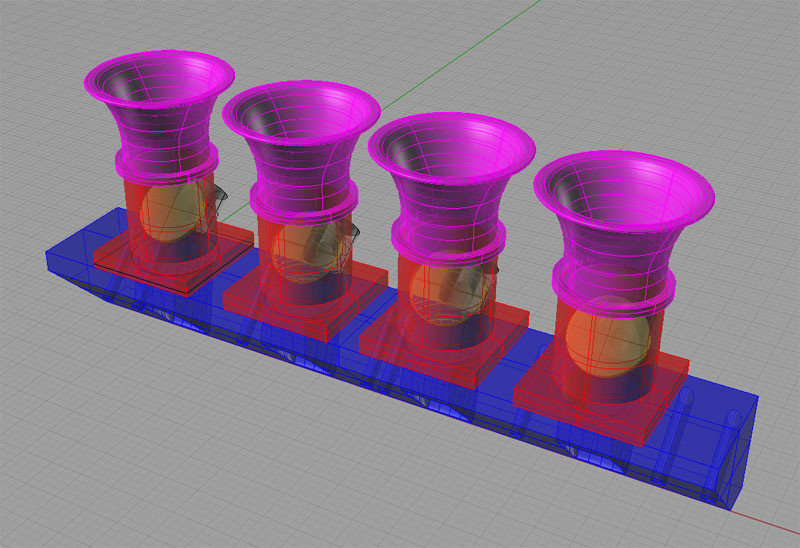
Stacks and butterflies in all their glory...
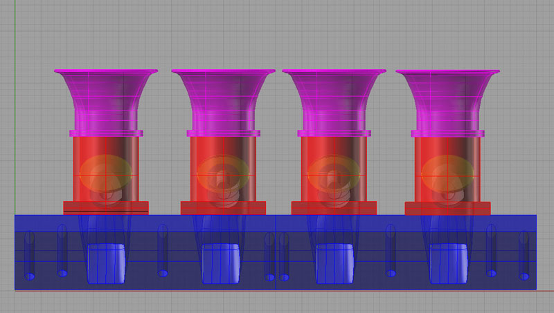
The 351C has huge rectangular intake ports--plenty of breathing!
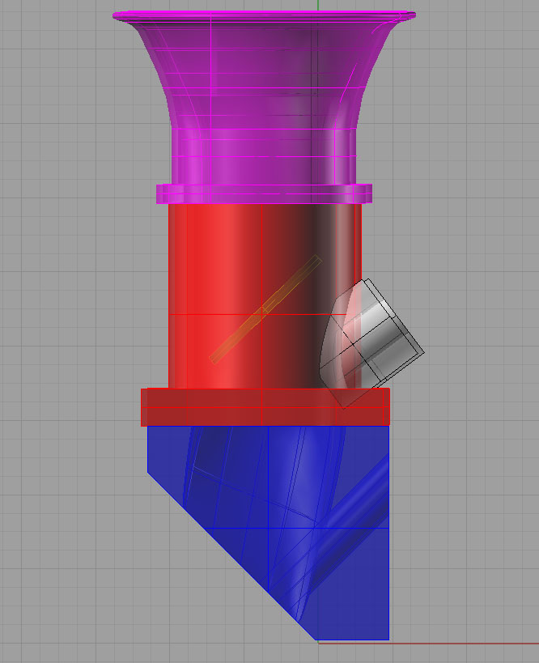
Need to think about the optimum angle for the injector to shoot fuel in. With a little work, can probably get it to go right down the hatch!
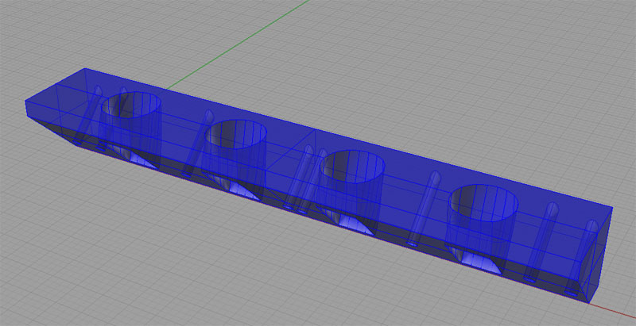
Here is the basic plate that goes on the head. It's job is to transition the round ports from the throttle bodies to square ports on the head as well as to provide a mounting surface for the throttle bodies...
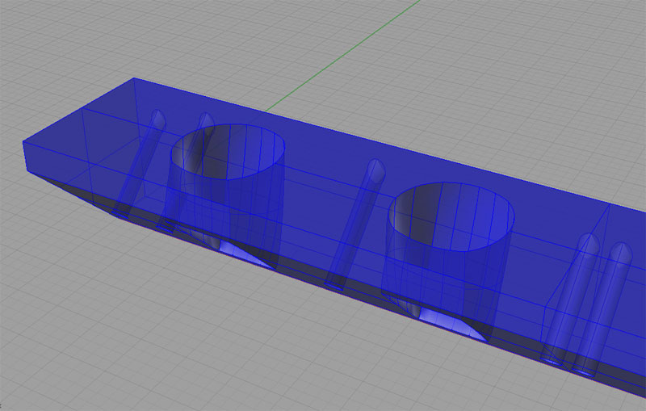
A little closer look...
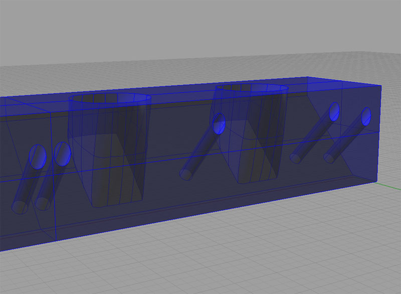
And from the back side. In practice, I would machine a single piece that bolted to both heads with a center plate between...
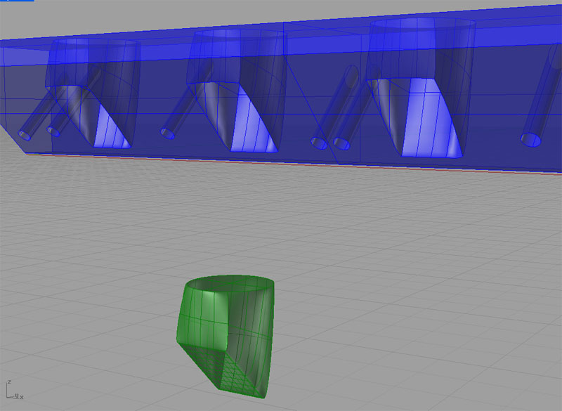
That's what the throat of the port looks like...
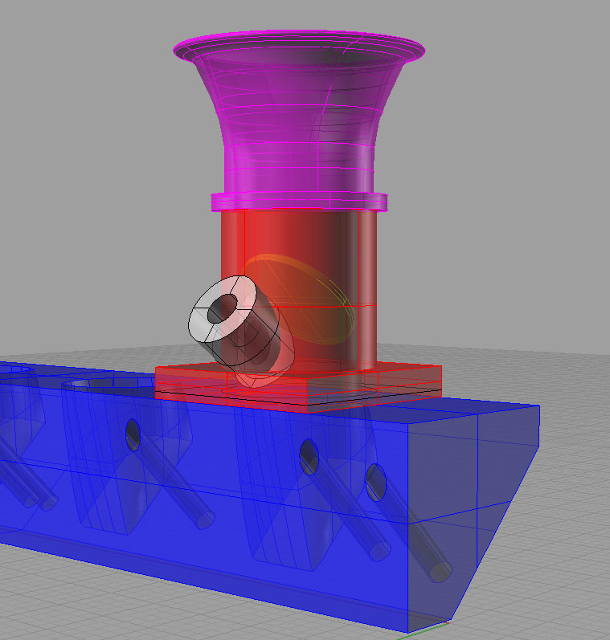
A throttle body close up...
Mini-Tutorial
I'll assume you know the basics of Rhino and just want to know the slightly less obvious aspects of how I drew this intake system.
I started out by throwing one of my aluminum heads onto my granite surface plate (gently, gently!) and using the height gage and my calipers to take some measurements. From there I drew a template for the intake ports and the mounting holes:
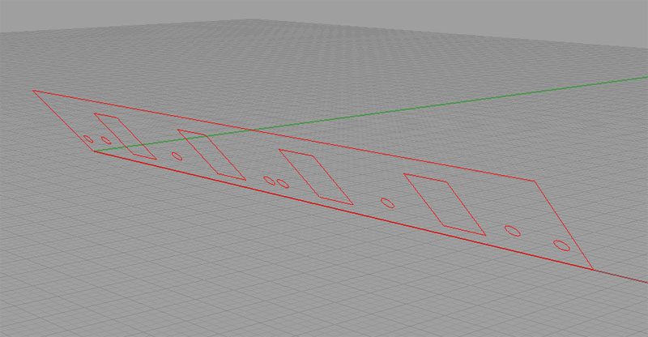
Here is the intake port template...
I drew the pattern flat and then rotated it up. I found it convenient to keep it all on a layer of its own so I could turn it on and off as a unit.
Next I wanted to create a template for the "top" of the manifold, where the throttle bodies would be mounted. To do this, I chose a circle diameter and position by eyeballing them directly over the intake ports, and starting with the "top" being about 1/2" above the top edge of the port template. This left me with a throttle body template (in purple):
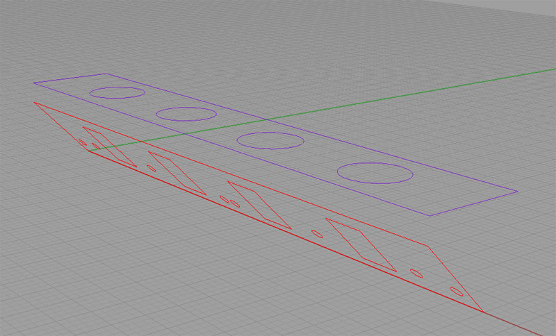
Throttle body template in purple, intake ports in red...
Now it was time to create the solid for the manifold. My approach on these is always to think of the Boolean operations. They seem to me to be like "machining" out a billet. So, I extruded just the rectangular outline of the Throttle Body Template downward to a point slightly below the intake port template. I extruded the Intake Port Template's rectangular outline away (to the left in the image above), and then I used Boolean Difference to subtract off the Intake Port Piece. I extruded a bunch of cylinders from the mounting holes to "drill" them through. That just left the blending of ports from the circular openings at top to the rectangular ports below. This was the hard part for me!
First I had to figure out how to go about it. At times like these, I spend a lot of time starting at the menus and just trying whatever might work going from top to bottom. For example, "EdgeCurves" isn't helpful:
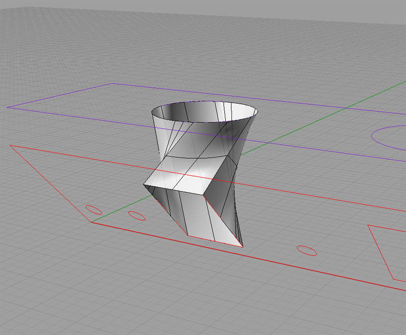
EdgeCurves won't do it!
I couldn't find anything that would just take those two curves and build me a decent surface. So, I capped the two with PlanarSurface and went looking for something to build the vertical walls between those two surfaces. Here they are capped:
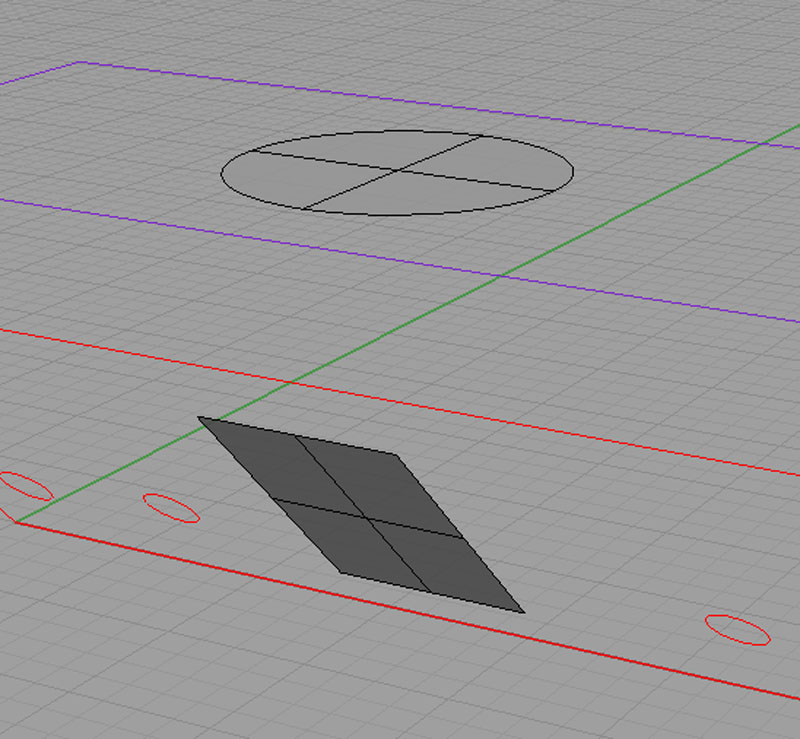
PlanarSurface will cap the two openings...
The command I hit on that worked for me was "BlendSurface":
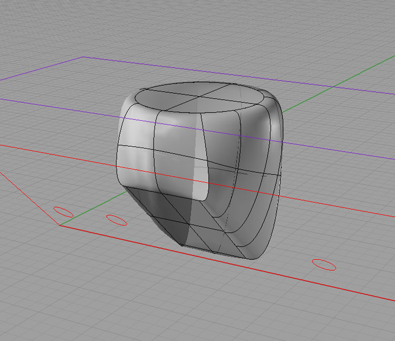
BlendSurface works...
I had to fiddle with the command to get a decent result, but I got there. Note that if we were really going to build the manifold, this is still not a great port design. You don't want it to "bulge" in the middle like this. You want it to smoothly taper from the round opening down to the rectangular port. This will increase the velocity of the flow as the air moves into the cylinder head. To do this, you have to turn on the control points and tweak the surfaces. I tried that for about half an hour, and I can tell you its hard to get good results. Eventually, I backed all those changes out and went back to basics of getting a visually appealing model together.
Anyway, this was just a trial. Next step was to use Boolean Difference to subtract these little goodies back out of the big intake manifold "billet". Here's where I hit my next big snag. that collection of surfaces did not a solid make. As they say, the model was not "water tight". After much cursing and referring to the Rhino FAQ, whose first entry has to do with this problem, I hit on the idea I had to find and eliminate the "Naked Edges" in my surfaces before I could use them. Things brings up the first question:
Why does it make any sense to have BlendSurface create naked edges, ever?
Even if it made sense sometimes, the default should be for the command to try to automatiacally clean them up so innocent users like me don't have to pull our hair out with a model that won't hold water. This is one of the biggest problems with Rhino (the other being its not parametric like say Alibre or SolidWorks, but we'll leave that for another day). The program's creators seem to know so much geometry and internals that they just don't think about how unintuitive this is to the average user, even when they complain about it so often it becomes the very first entry on their FAQ.
Oh well. They do provide a command to help you find the naked edges (if they can find them, why can't they eliminate them?!??) called ShowEdges:
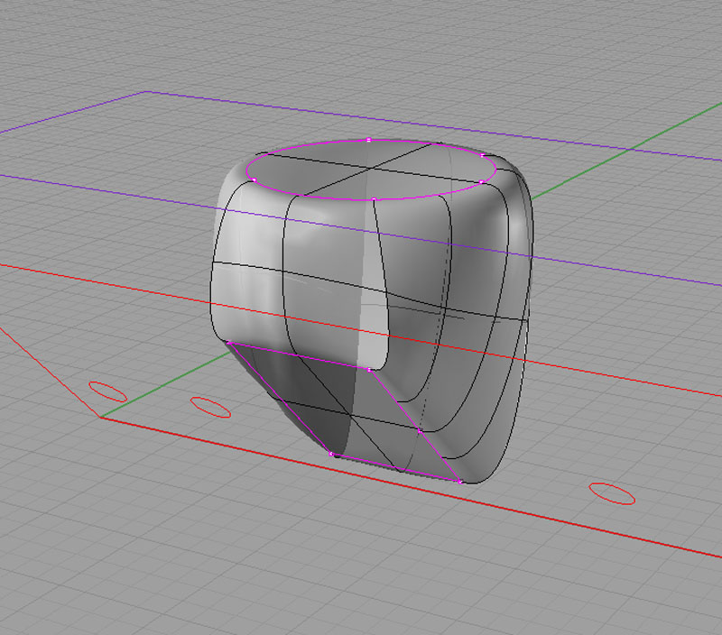
The naked edges revealed!
Well of course, why would a command called Blend Surface actually blend the edges of the new surface with the old ones? Sorry, that sarcasm escaped involuntarily based on my frustration.
Now how do we go about fixing those Naked Edges? Low and behold, there is a command called JoinEdge that will "glue" those two seams back together. Again, if they can find them and join them, why can't they do that automatically? Makes no sense to me that they don't offer to do that.
I got onto this stuff reading through the FAQ, but it wasn't straightforward. For example, they recommend looking at things with the Intersect command. This showed all kinds of random mayhem going on in my world, but gave no clue I could decipher on how to fix it. Thanks, I knew there was a problem when the Boolean operation failed. It goes on to use commands like "What", which just tell you curves are open. Again thanks, but that didn't help. They also say using JoinEdge may not work, but don't say what you should do instead. Lastly, there is a big tolerances discussion. I fiddled with tolerances for quite a while and could perceive no effect whatsoever on my problem.
In any event, I eventually eliminated the naked edges. Imagine my reaction when the Boolean Difference still failed! Yep, it was ugly. So, I went back and read some more in the FAQ. Seems like if edges are close, it just won't happen right. So, I shifted the port solid along the line of the intage port plane and I drilled a big fat cylinder down from above to make sure we were piercing the edges of the big billet solid. Voila! Suddenly all was well and it worked.
Here again, I must insert an editorial comment. Why should the boolean operation fail altogether when the edges of one are close to the other? What if I wanted a cavity that didn't pierce all the way to the surface? This behavior seems like a severe limitation at best to me and a bug at worst. I am sure there are sound technical reasons why it is that way. They probably boil down to it being hard or slow to do the "right thing", but still, it leaves the user in an unsatisfactory place.
End of tutorial rant...
Mini-Tutorial, Part 2, aka Doing It Better
There is another approach that was suggested to me on the CNCZone that does not create an naked edges at all. It also creates an intake port shape that doesn't "bulge", and would hence have better flow characteristics. Here is an illustration of the two key steps:
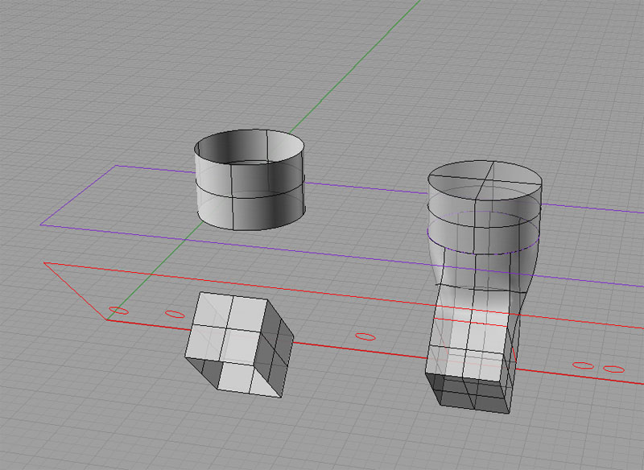
First extrude the curves for the two port ends, then BlendSrf, and CapPlanarHoles...
I was told BlendSrf creates a surface tangent two the two input surfaces, and that this is really the problem. Recall that originally, I was trying to blend the top and bottom which were just a circular and rectangular surface respectively. Instead, I was advised to extrude the two curves along the direction I wanted the blend to go, then do a BlendSrf, and Join the result. I did so, and then did "CapPlanarHoles" and got the figure on the right which had no naked edges by default.
Great!
But...
My reaction at this point remains mixed. It's great that it works, it's great that I learned something, but it just didn't have to be this hard. Rhino did not do a very good job blending the two surfaces unless I get them moving almost in the right direction to start. Further, I had to know quite a lot about BlendSrf's behavior (the tangency aspect, the naked edge issues, etc.) to get it to work. BlendSrf was evidently the right command, it just is very clumsy to use.
I am convinced there is no advantage to power users in how these commands operate and tremendous pitfalls for new users to learning the program. I had thought Rhino much easier, having only worked with rectangular and cylindrical solids to this point. I would like to try OneCNC's solid modeller as well as the Alibre downloadable demo on this exercise and see how it compares. I will try to do that if I get some time.
Mini-Tutorial, Part 3, Trying it in Alibre Design
Alibre Design is a parameteric CAD program that is pretty full featured, and that has a comprehensive low end version available for free as well as a demo version of their high end product. I thought it would be interesting to compare and contrast the experience of drawing this same figure in Alibre.
In Rhino, I'm pretty facile with drawing basic shapes. Laying down the intake port template was a matter of a few seconds. I simply created a rectangle corresponding to the port size and another corresponding to the separation between the ports and then used Rhino's excellent object snapping facility together with Copy to lay out all 4 port rectangles. Getting rectangles of the appropriate size was just a matter of typing in width and height automatically once the first corner point was selected. Quick and easy.
Alibre was slightly harder, largely due to my unfamiliarity with it. One goes into "sketch" mode to draw this sort of object. rectangles are available, but I did not find the fancy snap capabilities of Rhino. Instead one draws a rectangle of approximately the right shape in approximately the right place, and then uses constraints or dimensions to anchor and size it properly. The dimensions are pretty cool. Once the rectangle is dimensioned, you can double click the dimension and type in whatever size you want the rectangle to be.
Doing this 4 times is also a bit different. Rhino has that handle business of clicking the right mouse button to do the same operation again. In Alibre, its a function of using the "Repeat" command to replicate a figure a set number of times with a given spacing in inches along either a line or circular path.